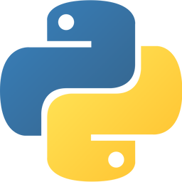
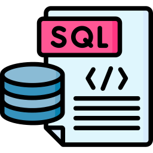

Html
O HTML é o componente básico da web, ele permite inserir o conteúdo e estabelecer a estrutura básica de um website. Portanto, ele serve para dar significado e organizar as informações de uma página na web. Sem isso, o navegador não saberia exibir textos como elementos ou carregar imagens e outros conteúdos.

CSS
O CSS é um código em que você pode fazer alterações rápidas de layout, como definição de cores e fontes, por exemplo. Essa camada proporciona não apenas a facilidade de personalização, como também ajuda a diminuir a repetição de conteúdo na estrutura do código.

JavaScript
JavaScript é uma linguagem de programação interpretada estruturada, de script em alto nível com tipagem dinâmica fraca e multiparadigma. Juntamente com HTML e CSS, o JavaScript é uma das três principais tecnologias da World Wide Web.

PHP
PHP é uma linguagem interpretada livre, usada originalmente apenas para o desenvolvimento de aplicações presentes e atuantes no lado do servidor, capazes de gerar conteúdo dinâmico na World Wide Web.

Python
Python é uma linguagem de programação de alto nível, interpretada de script, imperativa, orientada a objetos, funcional, de tipagem dinâmica e forte. Foi lançada por Guido van Rossum em 1991.
jQuery
jQuery é uma biblioteca livre que contém funções da linguagem de programação JavaScript que interage com páginas em HTML, desenvolvida para simplificar os scripts executados/interpretados no navegador de internet do usuário.

SQL
Structured Query Language, lit. "linguagem de consulta estruturada", é uma linguagem de domínio específico desenvolvida para gerenciar dados relacionais em um sistema de gerenciamento de banco de dados, ou para processamento de fluxo de dados em um sistema de gerenciamento de fluxo de dados.
Bootstrap
Bootstrap é um framework web com código-fonte aberto para desenvolvimento de componentes de interface e front-end para sites e aplicações web, usando HTML, CSS e JavaScript, baseado em modelos de design para a tipografia, melhorando a experiência do usuário em um site amigável e responsivo.

Node.js
Node.js é um software de código aberto, multiplataforma, baseado no interpretador V8 do Google e que permite a execução de códigos JavaScript fora de um navegador web. A principal característica do Node.js é sua arquitetura assíncrona e orientada por eventos.